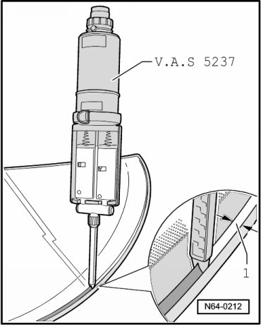
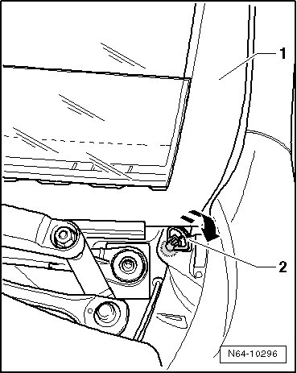

Flush Bonded Window Installation Information and Minimum Curing Time
Flush Bonded Windows
Flush Bonded Window Installation Information
- Apply the adhesive material to the primed area - 1 - or the trimmed sealant bead, holding the applicator at a right angle to the window.

CAUTION!
The window must be installed within 10 minutes or the adhesive will not bond well.
• With help of two suction cups (V.A.G 1344) install window in window opening, center and press in onto the spacing lip.
• The windshield gap dimension is 4 mm.
• The gap dimension at the top and sides of the rear window must be 2 mm.
• Secure the windshield with the window adjuster during the curing time.
• Always install the plenum chamber cover as described under, refer to --> [ Plenum Chamber Cover ] Flush Bonded Windows.
• Re-affix any stickers (for example, for airbag).
• Secure the rear window with tape during the curing time.
• If too much adhesive was applied and it spreads onto the window defroster, remove the excess.
• After the minimum curing time, release the window adjuster - 2 - - arrow - so there is no tension in the window - 1 -.

Minimum Curing Time
CAUTION!
There are special requirements for replacing bonded windows. This includes, for example, a newly bonded windshield is safe for vehicle operation also in case of an accident after a specified minimum curing time.
The minimum curing time for 2K adhesive DA 004 600 A2 is 3 hours for all windows.
Curing time means the time from when the window is bonded to when the vehicle is put back into use. During this time, the vehicle must stand on an even surface at room temperature (at least 60 °F (15 °C)).
CAUTION!
The vehicle is only ready for driving after the specified time has passed.